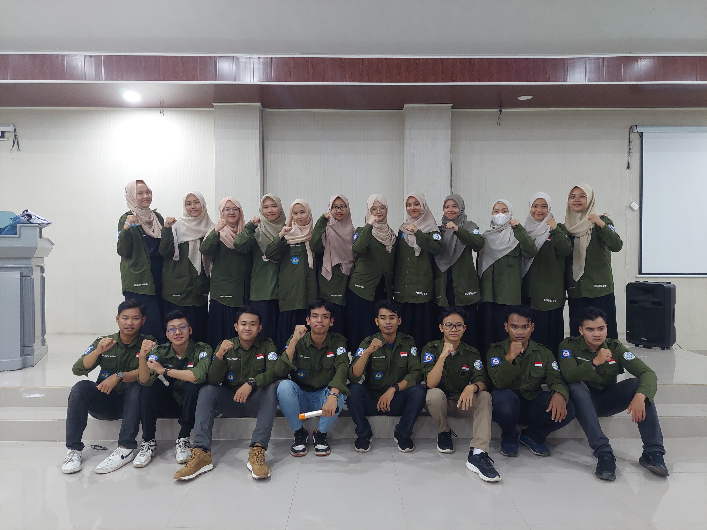

Visi Fossi FT Unila adalah menjadi wadah silaturahmi, studi dan kajian Islam yang berbasis keilmuan dan keagamaan yang berlandaskan Al-Qur'an dan As-Sunnah
APA ITU FOSSI FT UNILA?
Fossi FT Unila atau singkatan dari forum silaturahmi studi Islam fakultas teknik Universitas Lampung merupakan unit kegiatan mahasiswa tingkat fakultas yang berfokus untuk studi, silaturahmi dan kajian mengenai agama Islam
VISI DAN MISI
KABINET FATTAH
